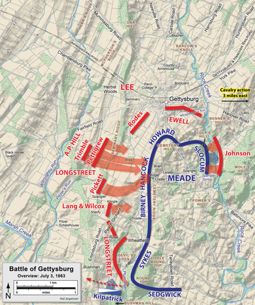

"It is well that war is so terrible, otherwise we should grow to fond of it." - Robert E. Lee
"It is well that war is so terrible, otherwise we should grow to fond of it." - Robert E. Lee
Source: Library of Congress Geography and Map Division Washington, D.C.
In 1863, both sides began to grow weary of war, with neither side willing to give up a war of attrition commenced. The Confederacy attempted to hold out till the Union public grew sick of war, while the Union focused on the "Anaconda Plan". The plan was drawn up by Winfield Scott at the outbreak of the war. Although initially ridiculed, the plan was now brought forth and put into the forefront of Union planning. It called for Union armies to capture the Mississippi, cutting the Confederacy in 2, while also intiating an Atlantic blockade. At the same time armies would operate in Virginia to protect Washington D.C and attempt to take Richmond. By attacking on all fronts, and by causing intense economic damage to the Confederacy, the Union hoped to finnaly end the Civil War.
Explore the battlefield!
On July 1st, the Confederate Army of Northern Virginia had once again invaded the union in a last ditch attempt to end the war quickly. They had won many victories in the past 3 years but were running low on manpower and supplies. As they converged upon the town of Gettysburg, they made contact with union cavalry forces, beginning the battle of Gettysburg. Both sides hastily reinforced their positions causing Gettysburg to become one of the largest battles of the war. If the Union failed to defeat the Confederates, they would be able to rampage across Pennsylvania destroying Union morale, if the Confederates lost, they would lose their chance to defeat the Union once and for all.
The first day of the battle was mostly fought by Buford's Cavalry and the Confederate vanguard, both sides trying to gain an early advantage. The Union managed to successfully delay the Confederates, falling back to a strong position. The second day of the battle saw heavy fighting around "Little Round Top" and Culps Hill as the Confederacy tried to repeatedly drive the union out of the their strong positions. After 2 days of bloody fighting, with no progress being made, Lee orders 12,500 men under Pickett to charge the union center. This resulted in one of the worst blunders of the civil war, with around half of Pickett's force becoming casualties of war. After this, the Confederates retreated back to Virginia, giving the Union their first decisive victory against Confederate forces.
Map of the battle Day 3

“Never mind, General, all this has been my fault; it is I that have lost this fight,
and you must help me out of it in the best way you can.” - Robert E. Lee
The defeat at Gettysburg coincided with the fall of Vicksburg in the west.
After the twin defeats the Confederacy was in a dire state, the Mississippi was taken by the Union and their
star general Robert E. Lee had been defeated in open battle. After this battle there were no more attempts at
invasion by the Confederates, they now prepared to defend as long as possible against the coming Union tide.

Explore the battlefield!
In 1864, the Army of the Potomac was under new leadership, Ulysses S. Grant, now General in Chief of all union armies, took command and prepared for the bloodiest campaign the civil war had even seen. Unlike previous Union commanders, Grant was aggressive, after masterminding a complete Confederate defeat at Vicksburg, he prepared for a different style of warfare in the East. He believed that the best way to defeat Lee was through attrition, the Union had more men and would outlast the Confederacy in a war of attrition. This idea was what pushed Union military doctrine in this campaign, the doctrine of "Keep Attacking".
The Overland Campaign saw a newer, more modern style of fighting as compared to the rest of the war. Instead of large field battles the campaign largely devolved into trench warfare as both sides suffered horrendous casualties. Lee, knowing that Grant was aggressive, attempted to suprise him at the Battle of The Wilderness. The brutal fighting resulted in 17,666 casualties for the Union and 11,033 for the Confederates. Despite this Grant kept attacking. At Spotsylvanias Court House both sides took another 30,000 casualtues. At Cold Harbor, the Union suffered another 13,000 casualties and the Confederates suffered 5,287. Lee could not keep up with the aggressiveness of Grant, or with the manpower of the Union After the Overland Campaign, Lee's army was barely able to fight eventually resulting in his surrender in the following year.
Map of the battle Day 3
| Battle | Union | Confederacy |
|---|---|---|
| Wilderness | 17,666 | 11,033 |
| Spotsylvania | 18,399 | 12,687 |
| Cold Harbor | 12,738 | 5,287 |
| Overland Campaign | 54,926 | 32,500 |
Source: Library of Congress Geography and Map Division Washington, D.C.
After Being besieged and chased by Grant for over a year, Lee finnally gets encircled and trapped at Appomattox. Sherman, after marching throughout the Confederate heartland has come on Lee's flank and with the Confederacy on the verge of collapse, Lee surrenders to Grant Ending the Cival War.